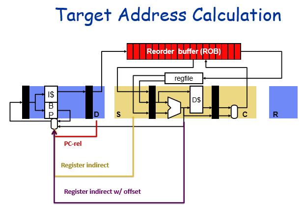

7 Instruction Flow
Topics:
- Instruction Buffers
- Return Address Stack
- Correlated Branch Predictors
Resources: H&P Chp3.3,3.9
- Where do we resolve the branch? Depends on the type!

- PC relative branches: don’t need to wait long
- Register indirect branch: need the value of the register, need to wait until instruction can be issued (ie when the registers are available)
- Register indirect + offset (most general way):
- Need to calculate the address, thus is resolved at EX stage
Performance Penalties of Branches
- Use up execution resources
- Fragmentation of I-cache lines
- Disruption of seq. control flow
- Need to determine direction and target
- Often results in stalls and squashes
7.1 Instruction Fetch Buffer
7.2 Branch Prediction
Two high level strategies:
- Static - same prediction for a branch everytime
- implement in compiler, by programmer, or in HW
- simple HW implementation
- Dynamic: some runtime info is used to make (potentially) different prediction each iteration
- implemented in HW
- need more HW, but better performance (most of the time, depends on workload)

- Target predictor feeds the PC
- Direction predictor only applies to conditionals
- since nonconditionals (eg jal) are always taken
7.3 Branch Target Buffer (BTB)
- Basically a small cache of past branch targets
- Use small set of the address (don’t compare whole address)
- Use part of the PC as the index into the cache
- If we’ve seen a branch to this before (recently): predict taken
- If we haven’t seen this (recently): predict not taken
7.4 Return Address Stack
- As we access the instruction cache, we also send that PC to the BTB
- Every time we have a function call (jump instruction), we also put the return address on the return address stack (RAS), and maintain it in a last in first out (LIFO) order
- Now how do we choose whether to use the BTB or RAS’s target address? We need to figure out if the instruction we’re fetching is a return (unconditional jump)
- We could include a couple extra bits to the instruction cache that indicates whether the instruction was a return instruction last time or if it was a conditional branch
- Access the BTB and RAS in parallel and these extra bits in the i-cache will indicate to whether the instruction we’re accessing was a return instruction last time we accessed it
- Sometimes encoded as a single bit in the ISA that indicates if it’s a return instruction
- These extra bits are indicated by the red blocks highlighted in the I-cache
7.5 Branch Direction Prediction
Direction Predictor (DIRP)
- Map conditional branch PC to taken/not-taken (T/N) decision
- 90%+ one way or the other is considered a “biased”
- individual conditional branches are often unbiased or weakly biased
7.5.1 Branch History Table (BHT)
- Add a table of branch histories
- Index of the table = PC of the instruction
- Use PC to index into the table and check where the branch went last time
- No tags because it isn’t to determine aliases, since aliasing means it’s hard to make sophisticated guess anyway
- Everytime a branch is retired, we write into this table
- Simple BHT guesses the same thing as before
7.5.1.1 Limitations of Simple Prediction
Consider an inner loop branch (nested for loops)
- branch predictor “changes its mind too quickly”, resulting in many mispredicts
7.5.1.2 Two-Bit Saturating Counters (2bc)
- Strongly Not taken, not taken, taken, strongly taken
- Mis-predict lowers confidence
- Correct prediction increases confidence
7.5.1.4 Global Branch Prediction
Instead of using a branch’s own history to make predictions, we could also use the direction of all (global) branches to correlate outcomes
7.5.1.5 Correlated Predictor Design Space

7.5.1.6 GShare

7.5.1.7 Hybrid (Tournament) Predictor
7.5.2 TAGE
TAGE (TAged GEometric) predictor
- Multiple predictors using different history lengths
7.5.2.1 Perceptron
- Use HW perceptrons to learn correlation with other branches
- Allows for much longer histories than traditional methods
- Traditionally, HW grows exp. with history length
- Perceptron scales linearly
7.5.3 Branch Predictor Summary
7.6 Early Branch Recovery
Previously to do branch recovery, we waited until mispredicted branch gets retired in the ROB, then we clear out everything in-flight to start over again. However this is a lot of latency especially in wide instruction windows. Idea with early branch recovery is that we start squashing wrong instructions right as we know the branch is mispredicted. We update selectively what instructions get squashed
- Everytime we have a branch, take a snapshot of all instructions older than the branch (ones we don’t squash), and ones after (potentially squash)
- Every time we dispatch an instruction, going to copy the current state of the branch mask register into the RS
- Eg, b-mask of 1000 is essentially saying that this instruction is only in the processor because we assumed that this branch was speculated correctly, if this branch is actually mis-speculated then it’s not supposed to be getting executed and should be squashed
- Then a branch mask of 1100 would be based on speculating the two branches correctly, etc
7.6.1 Dispatch Stage
7.6.2 Branch Resolution - Mispredict
7.6.3 Branch Resolution - Correct Prediction
- If the prediction is correct, once we resolve the branch and it’s correct, we can clear out that branch stack entry and clear that bit in the b-mask
- We also have to broadcast that the branch was correctly predicted to clear that bit for the b-mask register and for every b-mask in the pipeline
- Since we might reallocate that branch stack entry for another branch now
7.7 Aside: Ports vs Banks
7.8 Wide Instruction Fetch
- Average basic block size:
- integer code: 4-6 instructions
- floating point code: 6-10 instructions
- Major challenges:
- Multiple-branch prediction
- If we have multiple branch predictions in a single block we’re fetching, how do we deal with that?
- Alignment
- Instructions we want to fetch may not be aligned in the way we get our data
- Multiple-branch prediction